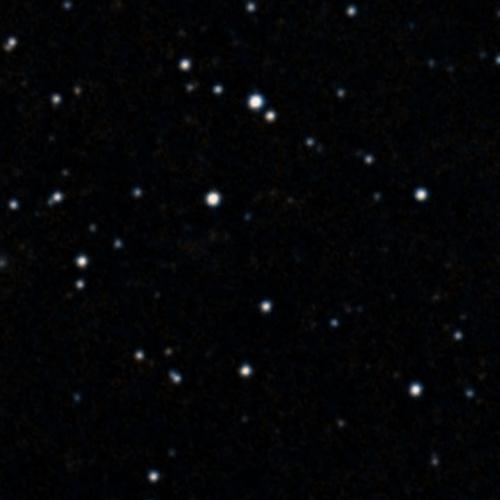
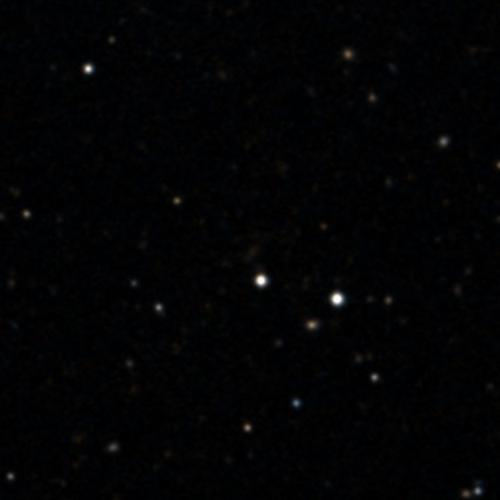
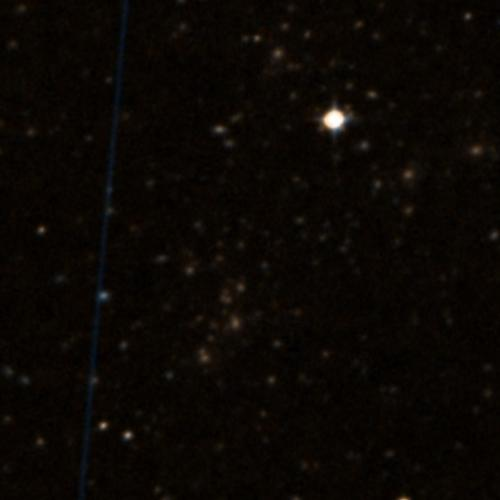
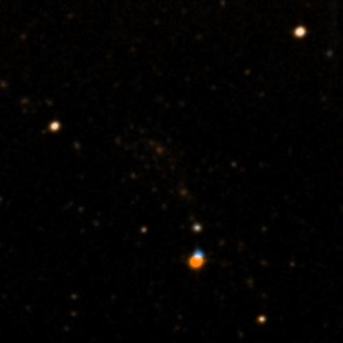

Einstein-cross candidates with all four JWST cameras
Hard constraint: NIRCam, NIRSpec, MIRI and NIRISS have all observed it (MAST, 2026-10-19). Only large cluster lenses pass. The single-galaxy quad lenses (HE 0435, PG 1115, WFI 2033, Cloverleaf, MG 0414) each lack at least NIRISS, so they fail it.
Multi-wavelength column: optical/UV from MAST, radio/mm from the NRAO archive. X-ray (Chandra, XMM) is not shown: my X-ray query returned the same count for every target, so I do not trust it.
SMACS 0723 (JWST first-image field)
JWST NIRCam (MAST preview)JWST NIRCam, second filter

ground view, DSS2 colour, 5′
The simplest picture of the four: one dominant cluster, a handful of long clean arcs, JWST's Early Release field, so every instrument has looked at it. No single 'cross' with a foreground galaxy in the middle, but the arcs are well separated.
JWST (4 cameras, observation counts)
NIRCam 21 · NIRSpec 455 · MIRI 4 · NIRISS 9
other optical/UV (MAST)
HST 140, GALEX 2, PS1 0, Swift 3
radio / mm rows (NRAO TAP)
ALMA 1092
literature
38 papers name it in title or abstract · Brammer/ESO-style and ERO papers; top paper: JWST ERO high-z galaxies (272 citations)
MACS J1149 (Supernova Refsdal)
JWST NIRCam (MAST preview)JWST NIRCam, second filter

ground view, DSS2 colour, 5′
The cross with a galaxy in front: SN Refsdal appeared as four points around a foreground cluster-member elliptical, the one with the predicted reappearance. Busier cluster field than SMACS, but the cross sits in a small region of it.
JWST (4 cameras, observation counts)
NIRCam 37 · NIRSpec 1403 · MIRI 8 · NIRISS 15
other optical/UV (MAST)
HST 1728, GALEX 2, PS1 20, Swift 0
radio / mm rows (NRAO TAP)
ALMA 2870, NRAO 1014
literature
33 papers name it in title or abstract · Top paper: a magnified young galaxy at z~9.6 (313 citations); Refsdal papers are cited separately
Abell 2744 (Pandora's Cluster)
JWST NIRCam (MAST preview)JWST NIRCam, second filter

ground view, DSS2 colour, 5′
The most observed: 3,825 JWST observations, nearly 20,000 ALMA rows. The busiest image of the four, a merger of several clumps. Most literature, most data.
JWST (4 cameras, observation counts)
NIRCam 316 · NIRSpec 3074 · MIRI 420 · NIRISS 15
other optical/UV (MAST)
HST 1005, GALEX 4, PS1 20, Swift 0
radio / mm rows (NRAO TAP)
ALMA 19818, NRAO 469
literature
302 papers name it in title or abstract · 302 papers name it in title or abstract; top paper 729 citations
MACS J0416 (Frontier Fields)
JWST NIRCam (MAST preview)JWST NIRCam, second filter

ground view, DSS2 colour, 5′
A Frontier Fields cluster with a very well-measured mass model and many lensed images. Busy, but a long-standing benchmark for lens reconstruction.
JWST (4 cameras, observation counts)
NIRCam 271 · NIRSpec 1334 · MIRI 2 · NIRISS 16
other optical/UV (MAST)
HST 1029, GALEX 2, PS1 10, Swift 0
radio / mm rows (NRAO TAP)
ALMA 4477, NRAO 948
literature
47 papers name it in title or abstract · 47 papers name it in title/abstract; top paper 180 citations